Suity Bot
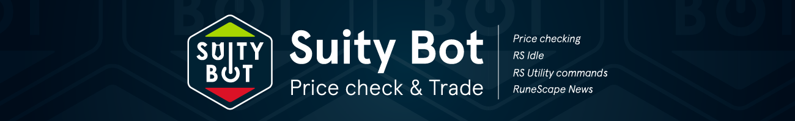
- Category: Graphic Design
- Team Size: 1
- Year: 2022
Suity Bot is a Discord bot used by many RuneScape players. The main purpose of Suity Bot is to allow players to view recent trade prices of in-game items; These prices are submitted by players, for players. The creators of Suity Bot came to me in search of a re-branding of the Suity bot and Discord server.
The Logo
Suity bot's old Discord server's name and logo was "PCT", standing for "Price Check & Trade", and the bot had a picture of a figure in a suit. The requirements I was given was that the logo must be simplified and rounded, to match the shape and size the owners intended for Discord.
To start I decided that the logo should be hexagonal. This would allow it to stand out from most other server icons which are typically circular. Where most server icons ignore background transparency, I could use the negative space to make the logo stand out further.
I included a tie as an element that was present in the old brand in the negative space of the "U" in "Suity", and an ON button for the "O" in "Bot" or a mechanical cog to give the idea of bot. The green and red arrows are there to remit to the prices going up and down. All of this is explained in the images below.
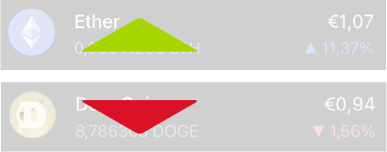
The different elements that compose the logo.
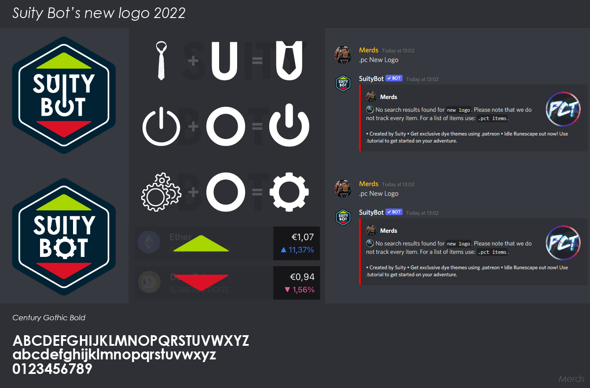
First client feedback presentation page.
After choosing the first option - with the ON symbol - in the image above, the client wanted to experiment with the sizing of different elements in the icon. There wasn't much room for expansion for something that would mainly be displayed at 50x50px but I decided to bring the outline closer to the edge, allowing for more space of the other icon elements. After discussing the options displayed below, the client was happy to continue with option 4.
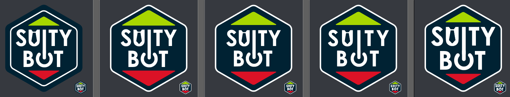
The different options in regards to element sizing.
Now that a logo was chosen, the clients let me know of all the components they required, which were as follows:
- 1 - Static base image
- 2 - Animated base image
- 3 - Banner for Patreon
- 4 - Banner for Discord
- 5 - "Dyed" variants of the logo
Animating the logo
After the requirements were set out on the static logo variants, I moved on to animated variants.
While creating the logo, I played with an idea of having numbers moving up and down in the middle to mimic animations seen on Crypto sites. However, this wasn't ideal for the client as they wanted something that would suit both their own Discord server and the bot. As a result, I made a simpler animation that would suit both platforms instead of being tied to a specific function of the bot.
The first three iterations of the animated logo.
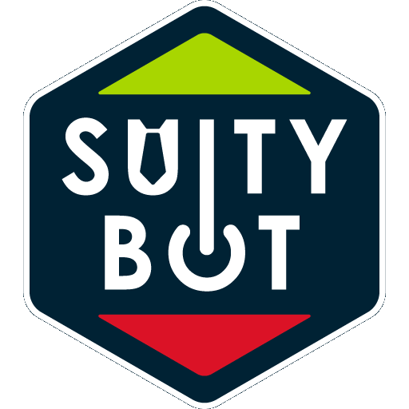
The final animated version, currently in use.
The Banners
When it came to the banners, I presented the client with the following two images, one for their Discord server and one for their Patreon site and the client was pretty happy with them. I later made a third image which was not requested by the client, this one is displayed on the web when an invite for the Discord server is received. This can be seen below the banners.
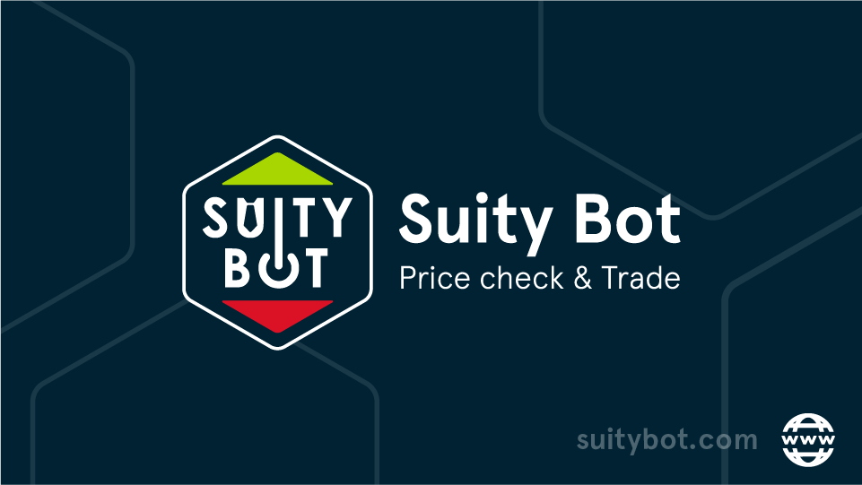
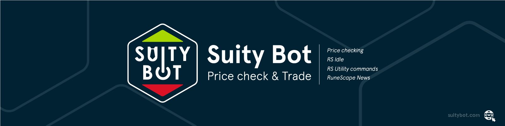
The banners for Discord and Patreon.
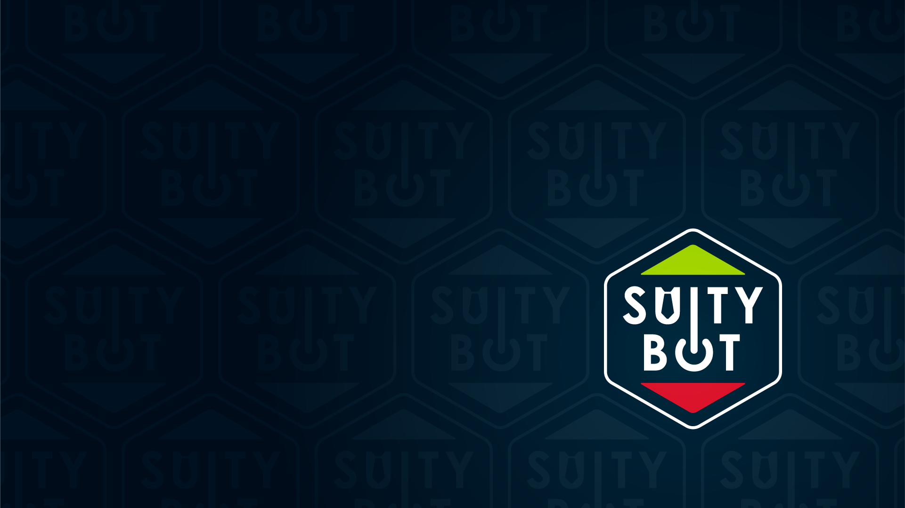
The background for the Discord invite screen.
The Patreon Badges
Lastly, for the "dyed" variants of the logo, I had to animate them in a way that reflected how dyes appear in RuneScape for "Barrows", "Shadow", "Ice", "Third-age", and "Blood", and was then asked to make a gold one and one inspired by japanese cherry blossoms. The results were the following:
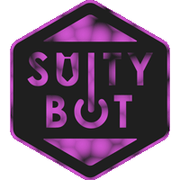
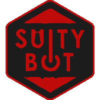

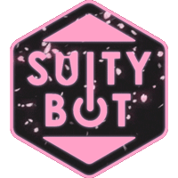
The banners for Discord and Patreon.